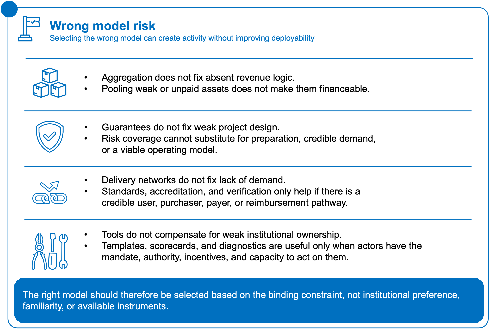
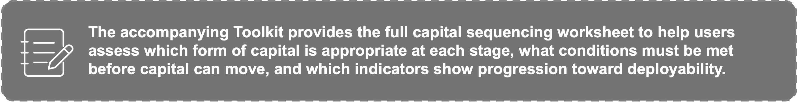
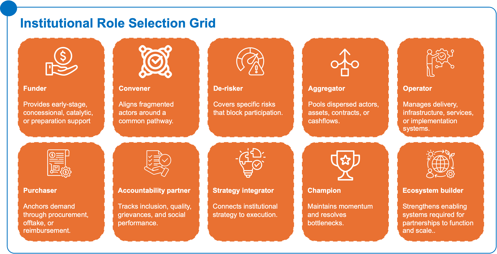
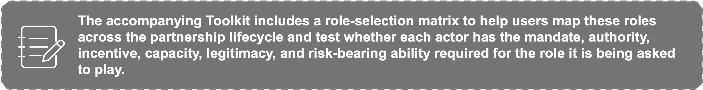

The first step is to identify the primary constraint. The same opportunity may face several constraints at once, but model selection should begin with the constraint that most directly blocks scale, sustainability, or private-sector participation.
The purpose of this selection process is not to force every opportunity into one model. Some initiatives may combine features of more than one model over time. For example, a delivery network may later generate receivables that can be aggregated into a financing portfolio, or a prepared infrastructure project may require a predictable provider network to sustain operations. However, starting with the primary constraint helps users avoid applying the wrong instrument to the wrong problem.
A useful model choice should answer three questions:
- What is the main bottleneck preventing scale or participation?
- Which model directly addresses that bottleneck?
- What must be true for the model to work in this sector or country context?
Model selection should begin with the constraint that most directly prevents deployability. The three models are not generic partnership options; each responds to a different structural problem.
A simple decision logic is:
If the main constraint is fragmented actors, assets, contracts, receivables, SMEs, or cash flows, the primary pathway is likely Model 1: Aggregation and Warehouse Platforms.
If the main constraint is an underprepared opportunity, unclear risk allocation, weak payment security, or low execution confidence, the primary pathway is likely Model 2: Integrated Project Preparation and Guarantee Platforms.
If the main constraint is fragmented service delivery, weak provider standards, limited verification, delayed payment, or poor coordination across providers and purchasers, the primary pathway is likely Model 3: Predictable Delivery Networks.
This decision logic should not be applied mechanically. Some opportunities may require more than one model over time. For example, a delivery network may later require aggregation finance, or a project preparation platform may eventually create a pipeline that can be warehoused or refinanced. The purpose of model selection is to identify the most urgent structural constraint and choose the model that addresses it first.

Using the Impact Capital Continuum Across the Three Models
The Impact Capital Continuum is not simply a list of financing instruments. It is a way of matching the right form of capital to the right stage of readiness. Grants, catalytic capital, guarantees, concessional finance, domestic capital, and commercial capital each play different roles depending on how mature the opportunity is, what risks remain unresolved, and whether the underlying delivery and payment systems are credible.
Across the three models, capital should move only as the opportunity becomes more deployable. This means that the type of capital used should reflect the maturity of demand, the credibility of the payer, the quality of preparation, the allocation of risk, the strength of delivery systems, and the ability of institutions to execute.
The Continuum helps users assess:
- which type of capital is appropriate at each stage of readiness;
- what risks must be reduced before more commercial capital can enter;
- when grant funding remains appropriate for market-building, inclusion, preparation, or public-good functions;
- when catalytic capital should be used to absorb early risk or crowd in additional participation;
- when guarantees, liquidity facilities, or risk-sharing instruments are needed to address specific risks;
- when domestic or commercial capital can participate credibly;
- which KPIs show that an opportunity is moving toward greater deployability.
Each of the three model chapters applies the Impact Capital Continuum through a model-specific capital pathway:
- Aggregation and Warehouse Platforms show how capital may move from market-building grants and first-loss capital toward warehouse finance, senior debt, domestic capital, and refinancing.
- Integrated Project Preparation and Guarantee Platforms show how grant-funded preparation, technical assistance, concessional finance, and guarantees can help move underprepared opportunities toward financial close.
- Predictable Delivery Networks show how grants, technical assistance, working-capital facilities, liquidity buffers, and receivables finance can help fragmented providers become financeable delivery partners.
The key point is that capital should not be introduced as a substitute for structure. If demand is unclear, grants or technical assistance may still be needed. If payment is credible but delayed, a liquidity facility may be more appropriate than a guarantee. If risks are specific and well understood, targeted risk-sharing may unlock participation. If cash flows, performance data, and institutional responsibilities are credible, domestic or commercial capital may become appropriate.

7.2 Institutional role selection
Once the model pathway is identified, institutions should clarify the role they are best placed to play. The question is not only which model fits, but who is needed to make the model work.
These roles are not mutually exclusive. In practice, institutions or individuals may perform multiple functions across the partnership lifecycle. However, role selection should be practical rather than aspirational. Actors should take on roles based on their mandate, authority, capacity, legitimacy, capital, risk appetite, and ability to coordinate or execute.
Figure 14: Core institutional roles: clarifying who funds, convenes, de-risks, delivers, and sustains scale.
The roles above should also be read through a systems lens. In some cases, the most important role is not generic convening, but ecosystem orchestration: the function of aligning actors, reducing transaction friction, maintaining execution momentum, coordinating across institutions, supporting shared standards, and linking capital, demand, delivery, legitimacy, and accountability. This differs from convening because it does not stop at bringing actors together; it helps move partnerships from alignment to execution.
Other roles may also be needed depending on the constraint. A domestic capital mobilizer may be required where local banks, pension funds, insurers, public funds, corporates, or local investors need to be prepared and engaged. A local ownership steward may be needed where the partnership must strengthen African institutional capability, local enterprise participation, community accountability, and long-term ownership of platforms, assets, or delivery systems.
Roles can also change across the partnership lifecycle. An actor that leads during design may not be the right actor to lead implementation. An institution that funds early preparation may need to transition responsibility to a public purchaser, operator, intermediary, or local platform owner as the model matures. Role selection should therefore be assessed across design, preparation, financing, implementation, scale, and transition or institutionalization.

The strongest partnership pathways usually require more than one role. A donor may fund preparation but also convene actors. A CSO may provide market intelligence and accountability. A government may act as purchaser, regulator, and political sponsor. A foundation may de-risk early participation while supporting ecosystem development. What matters is that roles are explicit, credible, and aligned with the constraint being addressed.
If no actor has the authority, incentive, capacity, or legitimacy to perform a critical function, that gap must be resolved before the model can become deployable.
7.3 CSO and institutional actor decision layer
Model selection should not be driven by capital logic alone. A model may appear financially sound but still fail if it lacks legitimacy, adoption, accountability, or delivery readiness. Similarly, a model may be socially compelling but remain difficult to scale if roles, payments, risks, and operating systems are unclear.
For CSOs and development actors, the decision layer should test whether the model is grounded in real demand and delivery realities. Key questions include:
- Is the demand visible, validated, and understood from the perspective of users or communities?
- Are trust, legitimacy, and adoption conditions strong enough to support implementation?
- Are inclusion risks, affordability concerns, or community-level constraints identified early?
- Are accountability, feedback, and grievance mechanisms built into the model?
- Does the model preserve the social and delivery logic that made the opportunity worth scaling?
For institutional actors, the decision layer should test whether the model fits strategic priorities, institutional capabilities, and resource commitments. Key questions include:
- Does the model align with the institution’s mandate, strategy, and risk appetite?
- What role is the institution best placed to play?
- Are the required resources, partners, systems, and decision rights available?
- Is there a credible capital, funding, or procurement pathway?
- Can the model scale beyond a one-off intervention or pilot?
This decision layer helps prevent two common mistakes: selecting a model because capital is available, rather than because it addresses the binding constraint; and assigning roles based on what actors should do in theory, rather than what they can credibly do in practice.
In this sense, model selection and role selection are inseparable. A model becomes deployable only when the right constraint is identified, the right pathway is selected, and the right actors are positioned to make it work.